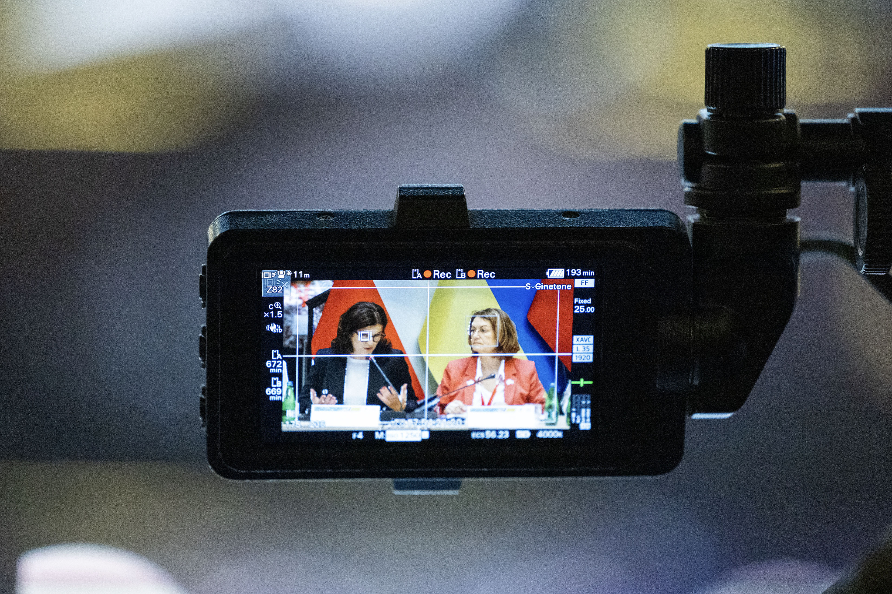
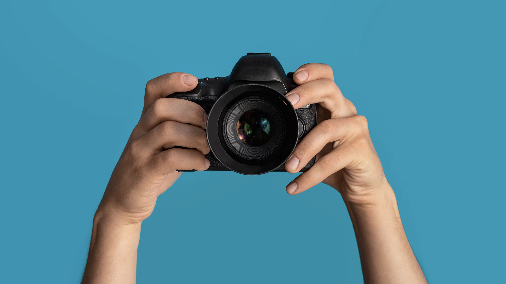
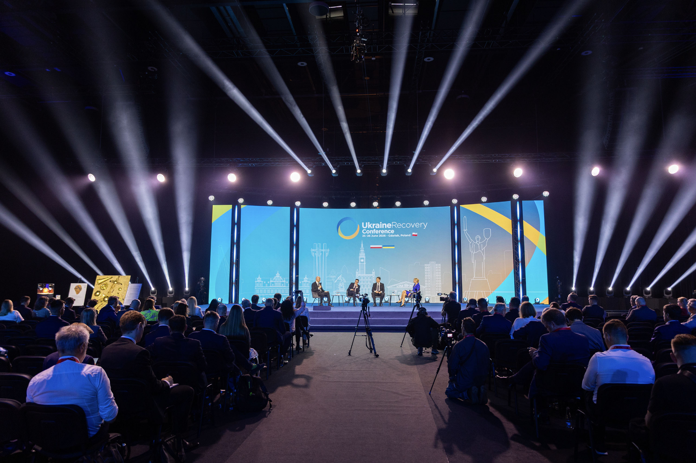
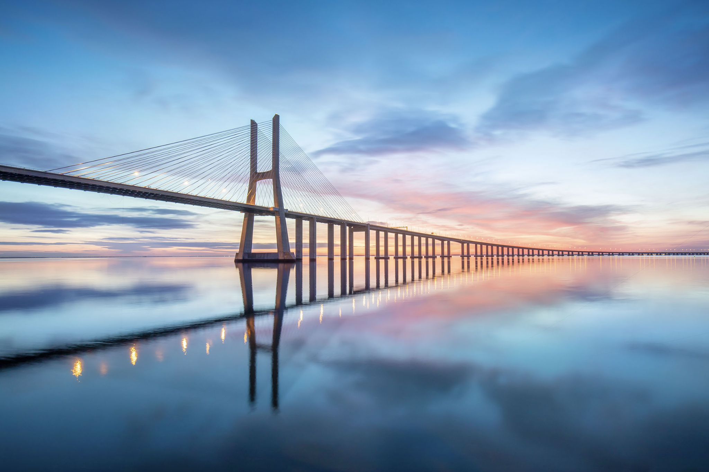
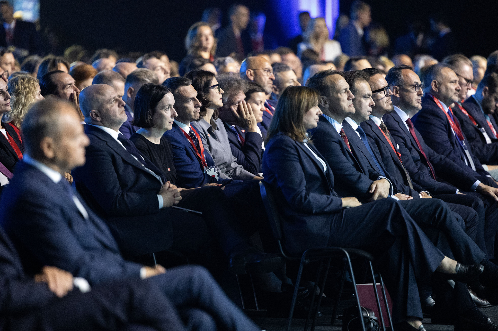

280recordings for media and press purposes
2025 at a glance
Communication became more visible, more visual and more measurable.
The 2025 results show a strong year for visibility: record media mentions, audience growth on social platforms, strong website performance and a dense calendar of events.
Communication ecosystem
One institution, multiple routes to impact.
Press, social media, audiovisual production, photo coverage, events, webstreaming, website and Dynamics 365 worked together to reach different audiences.
CoR
Communication
Communication

Media visibility
28,281 media mentions
Media coverage reached the highest number since 2017. Strong visibility came from the main campaigns and from countries with high coverage including Spain, Italy, Poland and Greece.
Social media growth
Follower growth accelerated.
CoR channels reached 261,307 followers. Organic engagement more than doubled, and video formats produced 1.2 million organic video views.

17,884photos produced

84videos, clips and podcast episodes
Audiovisual and photo coverage
Stories were produced for screens, feeds and archives.
The report highlights audiovisual production, studio recordings, podcasts and a major increase in photo output and Flickr views.
Campaign outreach
Three core priorities shaped the narrative — with Ukraine as a visible cross-cutting priority.
The figures below show media mentions by campaign and their approximate share of the total annual media coverage.


Events and digital engagement
From rooms to streams to inboxes.
Events, webstreaming, website activity and Dynamics 365 mailings created a connected engagement chain for institutional communication.
What 2025 tells us
Storytelling, data and accessibility need to work together.
The year confirms that the strongest communication products combine clear political messages, visual formats, reliable metrics and simple user journeys.